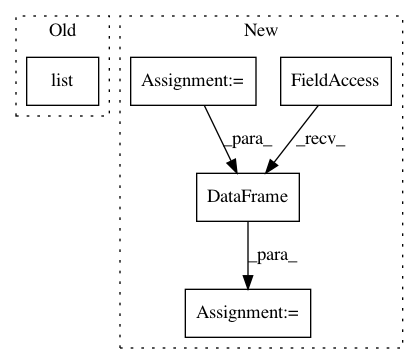

2edd1fe70a43b5b646662ef6603f579275141fae,examples/utils/tf_records_generation.py,,main,#Any#,96
Before Change
if not op.isdir(test_dir):
makedirs(test_dir)
for tile in list(tf_train[:,1]):
tile_dir = op.join(tiles_dir, tile)
shutil.copy(tile_dir, train_dir)
After Change
tf_tiles_info.append(y)
//train_len = 0.8
split_index = int(len(tf_tiles_info) *0.8 )
column_name = ["filename", "width", "height", "class", "xmin", "ymin", "xmax", "ymax"]
df = pd.DataFrame(tf_tiles_info, columns=column_name)
//shuffle the dataframe
df = df.sample(frac=1)
train_df = df[:split_index]
test_df = df[split_index:]
print("You have {} training tiles and {} test tiles ready".format(
len(set(train_df["filename"])), len(set(test_df["filename"]))))
// train_df.to_csv("train_df.csv")
// test_df.to_csv("test_df.csv")
tiles_dir = op.join(os.getcwd(), "tiles")
train_dir = op.join(os.getcwd(), "images", "train")
test_dir = op.join(os.getcwd(), "images", "test")
if not op.isdir(train_dir):
makedirs(train_dir)
if not op.isdir(test_dir):
makedirs(test_dir)
for tile in train_df["filename"]:
tile_dir = op.join(tiles_dir, tile)
shutil.copy(tile_dir, train_dir)
for tile in test_df["filename"]:
tile_dir = op.join(tiles_dir, tile)
shutil.copy(tile_dir, test_dir)
////// for train
writer = tf.python_io.TFRecordWriter(FLAGS.train_rd_path)
grouped = split(train_df, "filename")
for group in grouped:
tf_example = create_tf_example(group, train_dir)
writer.write(tf_example.SerializeToString())
writer.close()
output_train= op.join(os.getcwd(),FLAGS.train_rd_path)
print("Successfully created the TFRecords: {}".format(output_train))
In pattern: SUPERPATTERN
Frequency: 3
Non-data size: 5
Instances
Project Name: developmentseed/label-maker
Commit Name: 2edd1fe70a43b5b646662ef6603f579275141fae
Time: 2018-01-30
Author: geospatialanalystyi@gmail.com
File Name: examples/utils/tf_records_generation.py
Class Name:
Method Name: main
Project Name: NTMC-Community/MatchZoo
Commit Name: b2f440252697e9953fe3e77572713389d461a398
Time: 2018-12-13
Author: i@uduse.com
File Name: matchzoo/datasets/snli/load_data.py
Class Name:
Method Name: _read_data
Project Name: NTMC-Community/MatchZoo
Commit Name: a871536bcbb38b9ca03b0bc777712d8c0a79ad90
Time: 2018-12-13
Author: i@uduse.com
File Name: matchzoo/datasets/wiki_qa/load_data.py
Class Name:
Method Name: _read_data